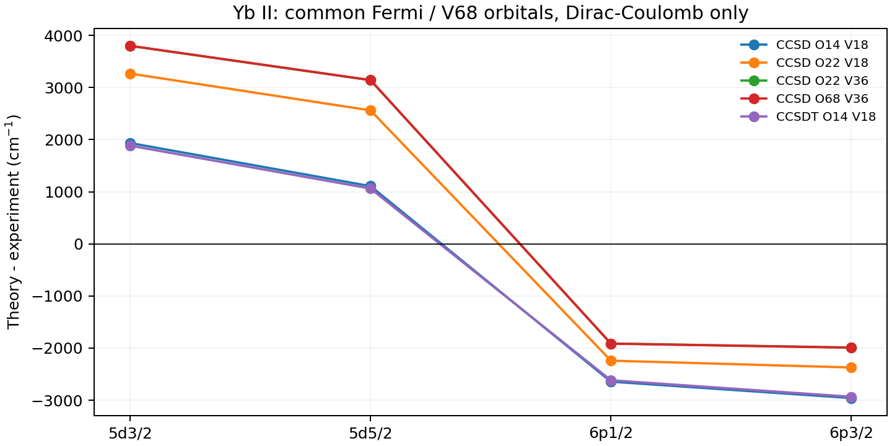

2026-10-09 · 固定原生积分、独立电子方程验收、完整声明空间、实验失败保留
Atomx 新增积分驱动的非线性 CCSD 与 FS-CCSDT 接口，实际调用经审计、打补丁的 EXP-T 张量方程后端。原生侧负责 Dirac–Coulomb 有符号积分、完整磁子空间、冻结核正规序、Fock/参考能量一致性、核层和虚轨道选择、资源预检及输入结果的哈希绑定。计算不构造完整多电子行列式空间。
本报告的“全阶 SD”采用非线性 CCSD：T₁、T₂ 的耦合反复求解，并通过指数包含非连通高阶贡献。独立线性化原子 SD、一般多价电子 CI+all-order 和角动量约化张量引擎仍是另外的能力。新后端与旧小空间有限 CCSD 算法锚分别保留，代码没有把旧行列式容量简单放大。
数值验收已通过；当前 Yb 虚空间和实验精度尚未通过。 相关门限沿用前序 1 cm⁻¹ 空间 / 1% 实验目标；算法正确与基组充分分别判定。
在统一正能电子投影和共同正交轨道下，原子哈密顿量写成
H = E_frozen + Σ h_eff[p,q] a†p aq + ¼ Σ g[p,q,r,s] a†p a†q as ar。
g = <pq|V|rs> − <pq|V|sr> 保留符号、相位和非对角项；h_eff = h_D + Σ_frozen g[p,i,q,i]。所有相关占据核轨道再进入 F = h_eff + Σ_correlated g[p,i,q,i]。参考能量同时含冻结核常数和完整参考电子对。导出前同时核查这些关系，避免把 Fock 矩阵误作裸单电子算符或丢掉冻结核能量。
CCSD 求解 〈Φμ|e⁻ᵀHeᵀ|Φ₀〉=0 的单、双激发投影；FS-CCSDT 在闭核及指定附着 / 脱附扇区实际求解连通三激发与折叠项，保留完整有效哈密顿量。0h1p / 1h0p 的活动指标由用户明确选择，其他已声明虚轨道仍参与外部振幅。当前原生积分覆盖 DC；这些实算没有追加 Breit、QED 或反冲，也没有实验能量对齐。
原始 Jacobi 更新在 DIIS 和阻尼之前测量。无分母移位时，实际保留方程残差等于更新乘以对角分母；报告使用 6 max|Fpp| · max|ΔT| 的保守上界。这个量衡量振幅方程，不是完整 FCI 波函数残差，也不是相关尾部误差界。轨道保持所声明的参考，自洽的 CC 振幅不代表重新优化了 QED 轨道。
固定 EXP-T 官方源码 后，发现 PySCF 积分入口的二电子读取被注释、Fock 块置零、部分二电子块依赖硬编码文件、排序只处理第一个块，显式活动空间解析还吞掉了行结束符。成功编译不能证明这些积分已进入电子方程。
隔离副本修复上述接口，增加 ATXCC001 ABI、完整块排序、原始更新记录以及双精度有效矩阵输出。上游 CC 张量振幅公式保留；修复补丁、二进制和全部后端源码有独立 SHA。原始下载仓库和此前科学证据保持。报告保留最初的解析 / 输出路径失败，以及默认 DIIS 不包含三激发时的慢迭代；重启使用相同物理模型与门限，将三激发纳入 DIIS。
Be²⁺ 的原生 1s / 2s / 2p 共同空间包含 10 个磁轨道；两电子完整 CI 有 45 个行列式，三电子附着完整 CI 有 120 个。导出积分逐项重组得到的矩阵与独立原生 CI 相差 1.78×10⁻¹⁵ Ha。
64 项相关测试通过。后续再运行新接口 6 项测试，包含真实外部电子方程；没有用 --help 或测试收集代替数值验收。
Ne 的闭核有 10 个电子，采用 ns=40 原生 B-spline 参考，保留 s/p/d 全部分波中所有 1 Ha 以下的正能电子虚态，得到 40 个径向虚轨道、144 个虚磁轨道及总计 154 个磁轨道。这个例子的虚态能量实际位于 0–1 Ha。全阶 SD 能量为 -128.701851089896 Ha，原始更新 7.005e-14，方程残差界 1.379e-11 Ha。后端运行约 142 s；含参考、积分和导出的实测总过程约 169.0 s。这是完整声明能窗的演示，不代表无限径向 / 分波收敛。
Yb 的原始 Fermi 核、V68 轨道和 ns=123 表示保持。相关核依次为 4f¹⁴（14 个电子）、5s²5p⁶4f¹⁴（22 个）、全部 68 个。冻结核以常数和单电子正规序进入；没有与旧 Σ₁ 叠加。虚池分别明确声明为每个 s/p/d κ 的最低 1 / 2 个 VN 正交补本征态，包含 6s/7s、5d/6d、6p/7p，对应 18 / 36 个虚磁轨道。
68 核电子、36 虚磁轨道的 CCSD 闭核空间含 1,437,588 个独立 SD 坐标（包括对称性零项），总磁轨道 104；闭核与价态方程均收敛。14 个相关 4f 核电子、18 虚磁轨道的完整 FS-CCSDT 也实算完成：闭核三激发范数 0.00255869，价态三激发范数 0.08200080，方程残差界 6.175e-13 Ha。
这些时间是在记录的机器负载下的运行时间，不作跨程序或 HPC 加速比声明。
表中单位均为 cm⁻¹，每一行用自身同 Hamiltonian、同轨道和同相关模型下的 6s 基态作为零点。身份按实际全局模型磁轨道、κ、J 与奇偶性确定；不是按与实验最近的能量匹配。有效矩阵的跨磁态 / κ 非对角项和简并一致性均通过 10⁻⁹ Ha 标量门。实验值沿用此前封存的 ASD 数据与态指认，没有重新拟合或修改原值。
| 模型 | 相关核 / 虚磁轨道 | 5d₃/₂ | 5d₅/₂ | 6p₁/₂ | 6p₃/₂ | 最大相对偏差 |
|---|---|---|---|---|---|---|
| CCSD | 14 / 18 | 24895.407 | 25440.384 | 24417.659 | 27433.854 | 9.771% |
| CCSD | 22 / 18 | 26228.530 | 26893.563 | 24820.708 | 28019.942 | 14.232% |
| CCSD | 22 / 36 | 26759.311 | 27473.895 | 25149.910 | 28402.893 | 16.543% |
| CCSD | 68 / 36 | 26761.077 | 27475.380 | 25147.658 | 28399.891 | 16.551% |
| CCSDT | 14 / 18 | 24844.613 | 25393.563 | 24444.617 | 27458.074 | 9.671% |
| 实验 | — | 22960.80 | 24332.69 | 27061.82 | 30392.23 | — |

| 同模型控制 | Δ5d₃/₂ | Δ5d₅/₂ | Δ6p₁/₂ | Δ6p₃/₂ |
|---|---|---|---|---|
| open5s5p:14to22core,18virtuals | +1333.123 | +1453.179 | +403.050 | +586.088 |
| 18to36virtuals,22core | +530.781 | +580.332 | +329.202 | +382.952 |
| openall68core,36virtuals | +1.766 | +1.485 | -2.252 | -3.003 |
| CCSDtoCCSDT:14core,18virtuals | -50.794 | -46.822 | +26.958 | +24.220 |
全部开核后的深核增量仅在当前 36 个虚轨道中约为 1.5–3.0 cm⁻¹；增加虚轨道带来的变化仍为数百 cm⁻¹。开启 5s/5p 核层的影响更大，且 P / D 态响应不同。扩大相关空间没有一致地改善全部谱线，不能把此前未收敛的接近实验当作精度证据。
CCSDT 与 CCSD 的同轨道、同核层控制已经单列。三激发效应不能与不同核层 / 不同虚空间的增量混加；下态和上态的各自总能量变化均保存于 results.json。这些 DC 对照也不能与以前完整静态 DCB 的数值直接相减归因。
完整 Yb 正能 VN 空间（低于 5 Ha、ℓ≤3、全部 68 核电子）在当前径向表示下需要约 29626483558704 字节的完整积分表示，即约 29.6 TB。程序在分配之前拒绝整个请求；没有把完整能窗偷偷换成少数虚态。
下一阶段首先需要按原子角动量约化 / 分块流式积分降低驻留表示的规模，再检查完整正能尾部、高分波和径向空间；随后在同一扩展空间中增加三激发，并独立加入完整静态 Breit / QED / 反冲算符。多价电子、一般粒子—空穴模型空间和经左态处理的跃迁矩阵元另行验证。现有能量结果不提供物理共振极点认证。
当前软件已经能运行所记录规模的真正张量全阶 SD 与 FS-CCSDT；原子角约化、高精度收敛谱库及一般多价电子 CI+all-order 还需继续实现。实验门和 1 cm⁻¹ 空间门均保持失败状态。
tools/build_expt_backend.py；原生锚：probe_native.py；完整 Ne 能窗：probe_band.py；Yb 核层 / 虚池：probe_yb.py。